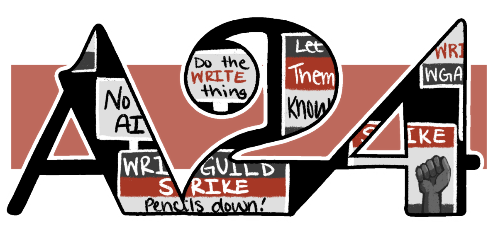

A24 Studios: Uma Jornada Cinematográfica Única
Fundada em 2012, a A24 surge como um farol brilhante no universo cinematográfico, desafiando convenções e levando a novos patamares a experiência cinematográfica. Como uma viagem por um terreno inexplorado da criatividade a história desse estúdio independente se consolida, à medida que cada obra entregue é uma expressão autêntica de visão e paixão.
Dessa forma, a fama da A24 permeia-se através de uma trajetória inovadora e corajosa, que abraça narrativas ousadas que desafiam expectativas. Cada projeto é uma peça única no quebra-cabeça, uma contribuição única para a arte, para o cinema.

Seu catálogo abrange variedades que oscilam de dramas intensos a comédias peculiares, passando por thrillers psicológicos e filmes de um gênero totalmente novo. Assim, percorrer sua linha do tempo é se deparar com histórias autênticas constantemente premiadas pela indústria.
Esta jornada cinematográfica transcende as telas, adentrando os bastidores de cada produção. A24 não é apenas um estúdio; é uma comunidade de talentos criativos que se unem para dar vida a visões únicas. Ao explorar a A24, você não apenas assiste a filmes; você embarca em uma viagem através da expressão artística, da experimentação e da busca incessante por contar histórias que tocam a alma.
